Mouth
For mouth you also have option between blendShapes and splines.
But what's different to the other setups is that on the mouth both ways happen with the same function: BASEMouthCtrls()
Blueprints
Creating the blueprints also happen with the buttons on the side:
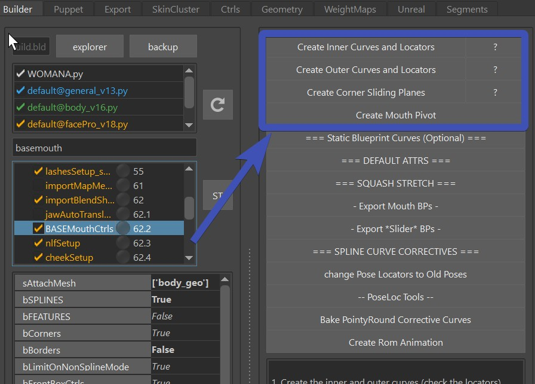
When you are doing blendShape rig, you don't need to do the Corner Sliding Plane, but the other 3 things you need.
Blueprints - Inner and Outer Curves
First select the closest (or smallest) loop of vertices, and press Create Inner Curves and Locators

This gives you this blueprint curve with locators. Make sure the locators are at the outer corners, since those
are separating the top and the bottom.

Now there's a very important and easy to miss attribute - bFlipInnerMouthCurves. On many characters the lips
are so close together, that some upper vertices are lower than the lower vertices. If this is the case,
then you'll need to set that attribute to True. Otherwise False.

Don't forget!
Make sure to doublecheck the bFlipInnerMouthCurves. You might not notice if it's wrong until the very end. And even though there are tools to fix the skinning if it was flipped, it's still better to have it correct from the start.
Next select the loop of the outer corner of the lips, and press Create Outer Curves and Locators

Blueprints - Mouth Pivot
Then click Create Mouth Pivot. When the mouth moves left/right in a sperical motion, the bp_m_mouthPivot is where the center is.
It's important that the X axis is pointing up, Y axis is pointing back, and the Z axis is pointing to the right.
Why is not not closer to worldspace? That's because it's closer to how the head joint is.
Watch out
If when translating the mouth_ctrl up/down/left/right things are moving in wrong directions, check the orientation of this blueprint. If the lip ctrls are not translating up/down in Y, it could also be the fault of this mouth pivot blueprint.
Blueprints - Slide Surfaces
This is only for Spline Rigs. If you leave the bSPLINE attribute as False, you can skip this.
But for splines, this is the surface that the controls slide along. In most cases this is better to represent the shape
of the teeth, instead of the shape of the skin.
For now just shape it roughly, but very likely you'll be revisiting this later and adjust the shape.

Watch Out
Make sure that this spans from as far back as the lip ctrls can go, to the symmetry line and further.
If later you see that the lip ctrls or the corner ctrls are doing some very bad jumps or artefacts in movements,
a badly placed slide surface is often the cause.
Upper and Lower Ctrls
Count/Positions
The Lip Ctrls (Upper and Lower Lips Ctrls) are the only ones where you can decide how many you want.
And you do that with the fLeftLipParamPercs:
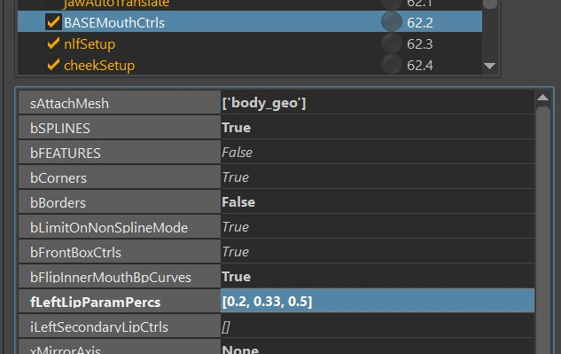
It might look a little "technical" at first glance, so here's the explanation:
If you set the attribute to [0.20, 0.33, 0.5], you'll get this many lip ctrls:

Is it too many? Yes, for a human most likely. But for dogs thave have long mouths, this could be the right amount.
For humans you might want to set it to [0.33, 0.5], which means one in the middle (yellow) and one on each side.
Or if you don't want the middle, just set it to [0.33]
Note
You see how we don't specify parameters higher than 0.5? That's because as the name already says it, we only specify the left ones, and the right ones are mirrored.
Orientation
The orientation of those ctrls happens with the slider blueprints (sliderBp_l_lipsBot1, sliderBp_l_lipsBot0, ..).
Keep in mind that unlike the other (simpler) slider blueprints, the ones for the lips are not live!
So you have to adjust before running the BASEMouthCtrls(), export those and rebuild to see the result.
BlendShapes
Here you can see a list of blendShapes. Those can all be used with or without the bSPLINES attribute.
If you set bSPLINES to True, then the blendShapes will act as correctives.
Corners (lipsCorner_[lr]_ctrl):
cornerIn
cornerOut
cornerUp
cornerDown
cornerOutUp (diagonal)
cornerOutDown (diagonal)
cornerInUp (diagonal)
cornerInDown (diagonal)
Note
For simple rigs you'll likely get away with just the simple ones (cornerIn, cornerOuot, cornerUp, cornerDown).
You can even use the simple ones and add combos, such as cornerOut_cornerUp instead of cornerOutUp.
But for more high fidelity rigs you'll definitely get better blending between the poses if you use the diagonal ones.
Upper/Lower Lips - those are triggered from the Upper and Lower Ctrls:
upperUp (upper lip raiser)
upperDown (opposite of upperUp)
lowerDown (lower lip depressor)
lowerUp (opposite of lowerDown)
If it's just one at each side and no middle, it's using the split radien fLowerLips and fUpperLips defined in
dSplitRadienFactors (edit it with the JSON Editor):

But if there are more
than 2 lip ctrls it's using a split-by-curve algorithm. It often gives great weights. But whenever it doesn't,
you can adjust the weights with the skinClusters of meshes called something like _body_geo_bpCurve_m_botLipInner_weightMesh_curveParamWeights_5.
Basically the blendShapesAndSliders() function creates those.
You can adjust the weights, export - and next time you build, it'll take those weights.
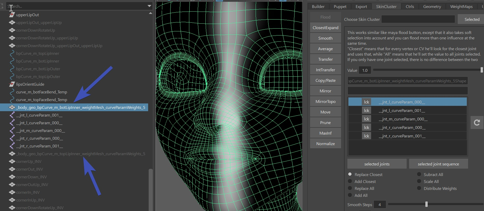
Recommendation
Tweaking this splitting skinCluster works well for small fixes. But if you feel that you need to do bigger adjustments, it might be better to explore another way, such as bSPLINES or Tweaker Lip Splines with bSplines.
mouth_ctrl:
funnel (translateZ)
lipPress (translateZ)
mouthLeft (translateX)
mouthRight (translateX)
mouthUp (translateY)
mouthDown (translateY)
Box Ctrls Translations (mouthBot_ctrl, mouthTop_ctrl):
funnelBot (translateZ)
funnelTop (translateZ)
lipPressBot (translateZ)
lipPressTop (translateZ)
mouthLeft (translateX, gets split automatically between bot/top)
mouthRight (translateX, gets split automatically between bot/top)
upperUp (translateY, they also get used by the upper/lower spherical lip ctrls)
upperDown (translateY, they also get used by the upper/lower spherical lip ctrls)
lowerDown (translateY, they also get used by the upper/lower spherical lip ctrls)
lowerUp (translateY, they also get used by the upper/lower spherical lip ctrls)
Box Ctrls Rotations:
lowerRollIn (rotateX)
lowerRollOut (rotateX)
upperRollIn (rotateX)
upperRollOut (rotateX)
Note
For realistic humans it would be best to shape the funnel and lipPress according to their scientific representation
(one page to check about FACs is facial-action-coding-system).
But if you are doing cartoony characters, many times animators prefer Box Ctrls and mouth_ctrl to just simply move
the lips forward or back.
Rom
The button Create Rom Animation creates a ROM animation.
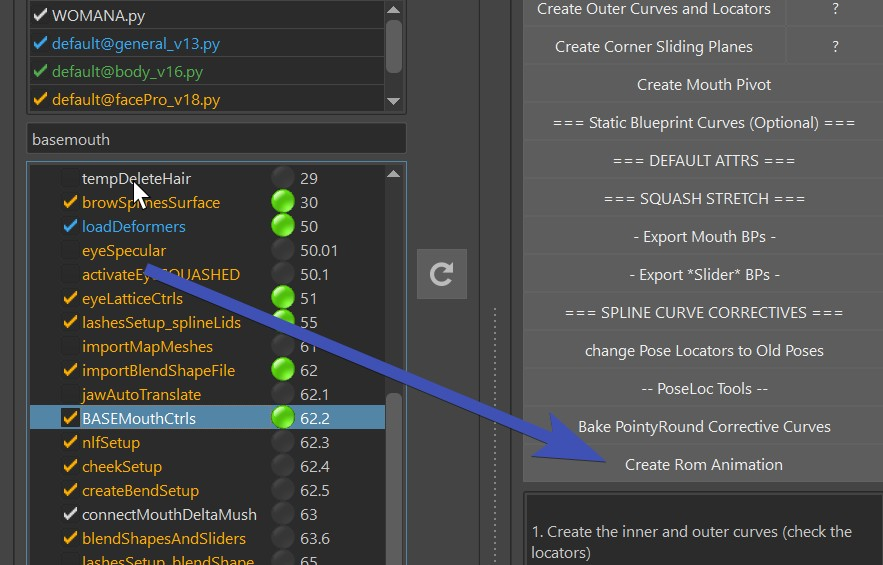
Mouth Directions
If you move the mouth_ctrl up/down/left/right or rotate it in rotateZ, (Frame 75-135 in the ROM), you can do this with the mouthLeft/mouthRight/mouthUp/mouthDown blendShapes (except the rotateZ).
But you can also do that with skinning, which would also take care of the rotateZ. If you use the bSPLINES option explained very soon, please skip this section! Because the splines will take care of that. But without the bSPLINES, here's how to skin the lips so you get the influences for the mouth_ctrl:
Click the shelf button (faceSkn)
to get the Face Skinning UI. Then select the area around the mouth and click Move Jaw/Head to frontPivots:
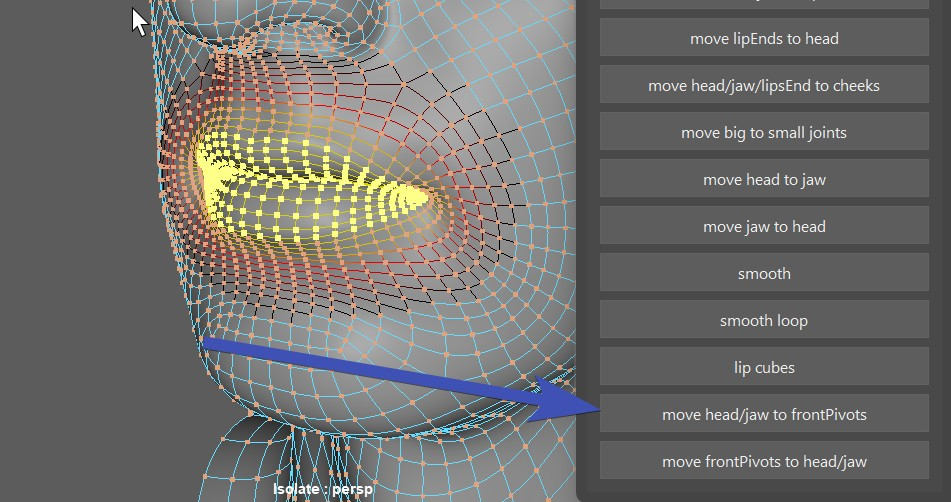
This skins to the joints jnt_m_mouthPivotFrontHead and jnt_m_mouthPivotFrontJaw.
Tip
If you skinned too much to the front pivots, you can also go back by selecting vertices and clicking the button just below - Move frontPivots to Jaw/Head.
Remember the mouth pivot blueprint? It's rotating the mouth along that pivot. But if you don't like the motion, there's
not always the need to go back and adjust the blueprint - instead you can just adjust the passer values.
On the passer of mouth_ctrl, you can find those values you can adjust:
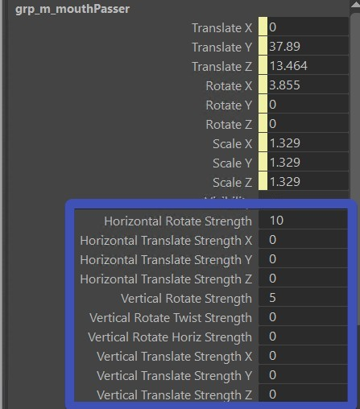
And don't forget to save those values with the ** === DEFAULT ATTRS === ** button.
If you don't need it
If you feel like you want to do the mouth directions entirely with blendShapes because you are concerned that the joint movements
are just working against you, just set all those attributes to 0.0.
Or if you also don't need the rotateZ, you can ignore this setup by just not skinning to the joints.
Splines
On the Mouth Rig, the Splines are using the same controls as the blendShapes. This brings a few advantages:
- You can use all the blendShapes stated above also as correctives
- You can have some characters with blendShapes and some with splines, and animators will have the same sets of controls
To turn on the splines, set bSPLINE to True.
And also set bBorders to False. The borders are useful for blendShapes, but not for Splines.
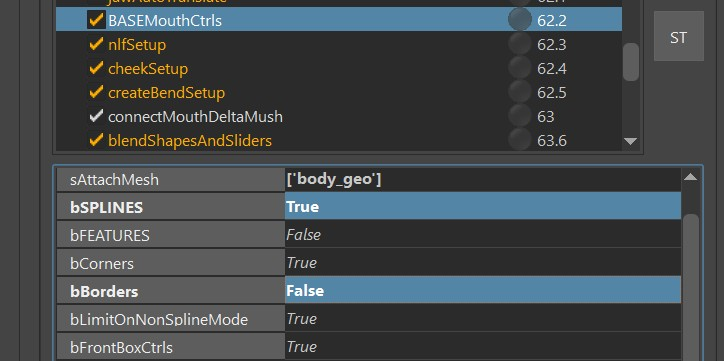
Another attribute to be aware of is the bSplineStaticCurves. If you have that set to True, only the corner ctrls will be sliding along the surface, and the lip ctrls will be sliding along static curves. This is the old behavior from facePro_v16 and below, and it was depricated for a while. However later it turned out that for simple human mouths it was still very useful since it's not so sensitive with the surface blueprint.
Spline - The Joints
For the spline rig there are the Big Joints (jnt_l_botMouthSplineBig_???) and the Small Joints (jnt_l_botMouthSplineSmall_???). By default they are a joint at each vertex on the loop:
Note
If you have a character with a very dense geometry so that a joint at every vertex would be too much, just set
the iSkipSplineJoints value to something higher than 0.
For example if you set it to 1, it means it skips every other joint. If you set it to 2, it always skips 2 joints until the next
one. Here we've set this attribute to 2:
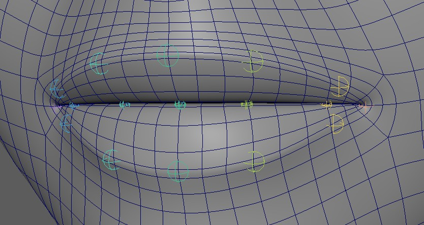
Why are they called Big and Small Joints?
That's because the bigger ones are bigger, and the smaller ones are smaller.
But also because the bigger ones should have a wider range of influence. Basically the Small Joints should just affect the lips
since they are taking more rotation from the ctrls.
The Big Joints take less rotational movements from the Ctrls, and therefore are more stable to use for the area outside the lips.
There's 2 more special joints, which are jnt_l_lipsEnd and jnt_r_lipsEnd. Those sit at the corner, and it's best to bind
the area left and right of the lips. Basically part of the cheeks.
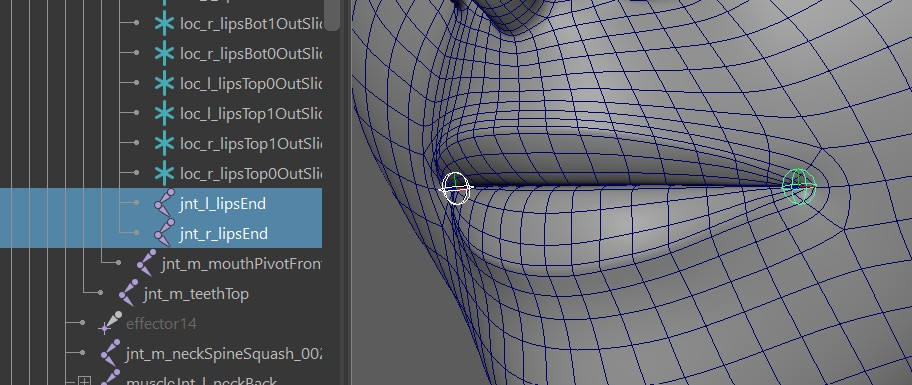
Splines - Skinning
At this point before skinning the Mouth Spline Joints, it helps if the jaw is already skinned nicely. But don't worry too much - if you do want to adjust the jaw weighting later, there's nice buttons that transfer skinning from spline joints to jaw/head and back.
Note
While you are free to use your own skinning tools on the mouth splines, it's recommended that you follow this workflow, since it involves tools that are made specifically for this setup.
To get the Mouth Spline Skinning tools, click this shelf button (faceSkn).
Which opens this UI:

Big Joints
The best thing is to just start with the button Add to Big Joints when you have the whole head mesh selected.
But first set the Rigid Loops and Fade Loops values.
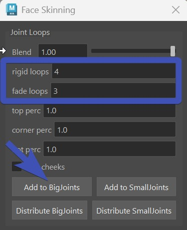
It's using the ClosestExpand tool under the hood.
At this point it's best to load the Rom Animation
Now you can do a few combinations of:
- clicking the Add to Big Joints on different vertex selections
- smoothing with just one iteration (there's a Smooth button at the bottom of the UI)
- add some weights to the lipsEnd Joints using the Move head/jaw to LipsEnds button further below.
Warning
You might be tempted to use the smooth tool a lot. But please don't overdo this. And if you use the smooth in the skinning tools, make sure to NEVER do more than one iteration when it's about the face. Unless it's a very high resolution face.
At this point try to get it to look clean, but don't worry too much about the details yet. That part comes next.
Small Joints
Did you notice that at this point in the Rom between 60 and 75 it's just rotating the box ctrls, but nothing is happening?
That's because the small joints are handling the lip rolls.
You have 2 options:
- Set the rigid loops and fade loops smaller, and having the whole head selected click Add to SmallJoints
- Keep the rigid loops and fade loops big, and instead of selecting the whole head, just select lip vertices (with soft selection) before clicking Add to SmallJoints
What are the perc attributes??
If you want to for example fade out the upper part slower, you can give the top perc a lower value. But it has shown that adjusting these types of things is easier by doing vertex (soft) selection.
Fixing Weights
If your weights got messy because you changed spline joint count (either by adjusting the curves or iSkipSplineJoints flag), or if just used the smooth tool too much - here's a way to fix this:
In the FaceSkininng UI, click the Distribute BigJoints and Distribute SmallJoints buttons.
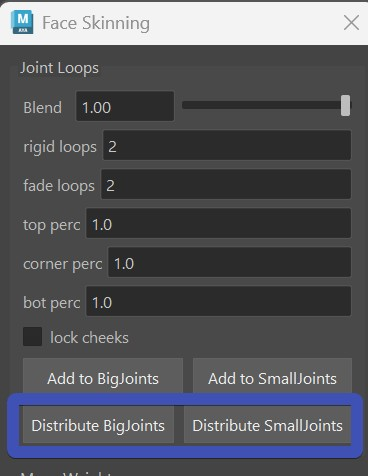
This grabs the current weights of all the joints, sums them together per each vertex and then uses that as a mask while redoing the expand weights operation.
Splines - Adjust Ctrl Behaviors
At some point when the skinning looks somewhat clean, it's best to start adjusting the behaviors of the ctrls some more.
The following things (1-5) should be done roughly in the same order, but most likely you'll be jumping back and forward,
and even might go back to adjusting skinCluster here and there.
The goal is to get the shapes and behaviors looking as good as possible without adding blendShapes. Even though you can still
add corrective blendShapes on top - the better the underlining setup, the more smooth the rig will be!
1. Slider Blueprints
Especially for the corners ctrls, try to find the right blueprint scale to get the best overall possible range. They are sliderBp_l_lipsCorner and sliderBp_r_lipsCorner.
Note
Unfortunately the slider blueprints don't affect the ctrls live. So you'll have to guess (or calculate) the scale, and rerun the BASEMouthCtrls() function.
You'll probably hit the limitation that for the outwards motion you want a different range than the inwards motion. You can adjust that in the following section.
2. Corner Multiply Values
The corner multiply values specify how much the joints should move based on the corner ctrl movements.
They should be used only in cases that scaling the slider blueprints couldn't solve. Such as if the cornerOut should be stronger
than the cornerIn

3. Defining a different Corner Range
So far the poses happen on a unified range, where corner ctrls only go to 1.0 or -1.0. But in some cases you might want to specify a different value, for example the cornerOut being corner_l_ctrl.tx at 2.5 instead of 1.0.
This can be done with the ddPoseCtrlValues attribute, using the JSON Editor:
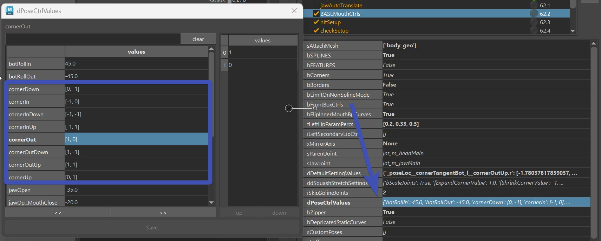
And it will affect Pose Locators, BlendShape Poses and even the Create Rom Animation button.
Warning
While the kangaroo tools such as the Shape Editor support this, it can be cleaner to stay in a unified range. So it's best to try to solve things with Slider Blueprints and Corner Multiply Values first.
4. Lip Ctrl Passer Values
The passers of the Lip Ctrls come with a few extra attributes:
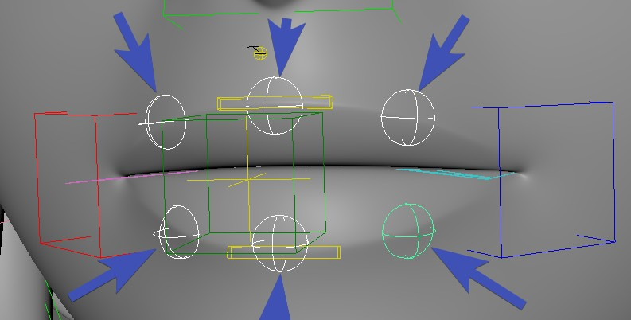 
| Attributes | What they are doing |
|---|---|
| Follow Corner Surface Vert | When corners move up/down in Y, how much the lip ctrls should follow that motion |
| Follow Corner Z | When corners move in/out in Z, how much the lip ctrls should follow that motion |
| Follow Corner Surface In | When corners in in X, how much the lip ctrls should follow that motion |
| Follow Corner Surface Out | When corners out in X, how much the lip ctrls should follow that motion |
| Aim To Neighbors | Creates a more smooth behavior by rotating the tangents based on the neighboring ctrls |
| Aim To Neighbors Pucker Multiply | On CornerIn the aiming is a bit unstable, with this multiplier you can turn it off |
| Live Tangent | If this is 1.0, the joints get aimed along the spline |
Mirroring and saving those attributes happens with the ** === DEFAULT ATTRS === ** button.
5. Pose Locators
Almost all ctrls come with lots of poseLocators that are used to define the ctrl behaviors even more. In funnel and lipPress
(mouth_ctrl.tz) they are even used to define the whole pose.
And all the pose locators are easily found by just selecting the ctrls, and in the outliner press f. You'll always see the currently
activated one as shown and the others are invisible:
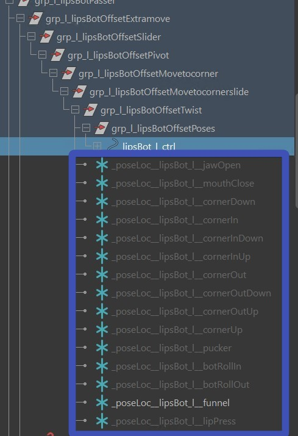
As you move around those locators, make sure to turn off the lipPush on all top ctrls(lipsTop*_ctrl)! The next time you build it, it remembers the offset, and incorporates those into the lipPush setup.
Tip
There's a lot of poseLocators in the BASEMouthCtrls() function, even for each detail ctrls. If you end up using them a lot, it's worth checking out the options under the
button ** -- PoseLoc Tools -- **.
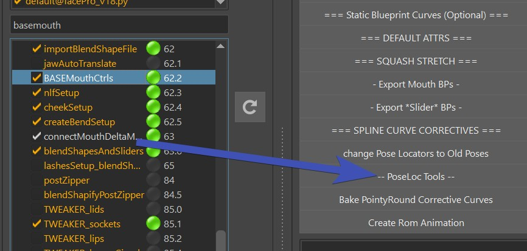
Same as with passer attributes, mirroring and saving the Pose Locator values happens with the ** === DEFAULT ATTRS === ** button.
Splines - Adjusting Pivots for Lip Rolls
In some characters you might be struggling with getting proper lip rolls (mouthBot_ctrl.rx and mouthTop_ctrl.rx)
because they pivot around the joints while ideally they should pivot around the center of the lips.
But there's a solution - you can change the pivot using the offset groups ending with Pivot:

Adjusting those will move the joints, so it's best to turn off the skinCluster. And show the curve with mouth_ctrl.curveVis.
Then you save their values with the **=== Default Attr === ** button, and rebuild. You should be able to get nicer Lip Rolls now.
A few Warnings
If you've placed pose locators already, likely you'll have to revise those after you changed it.
And this will mess with the zipper! So if you are adjusting the pivot groups, it's best to set bSplineZipper to False and use the
postZipper() function if needed.
Splines - Detail Ctrls
Detail Ctrls are automatically there. Animators can turn them on with mouth_ctrl.detailCtrlsVis:
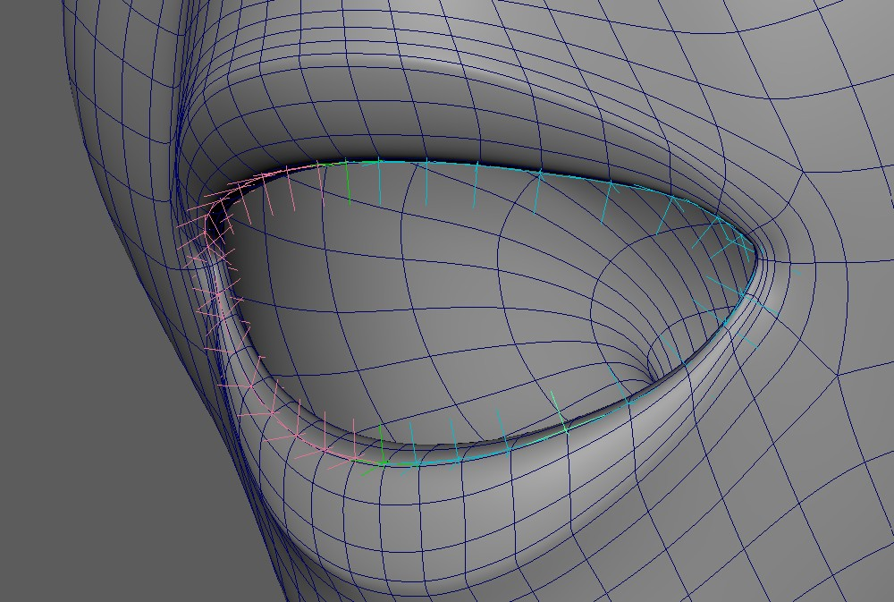
Each of them also comes with a set of Pose Locators, so you can use them to enhance some of your poses.
Do you think they are too many?
Well, they are just a ctrl for each small joint. If you want less, you can consider to set a higher value to iSkipSplineJoints.
But honestly they shouldn't be animated too much, they are really just to fine tune things.
MouthClose Attribute
This does NOT close the mouth if the mouth is open in the model! Ideally the mouth is closed in the model already. If it's open, this attribute (and other setups in Kangaroo) will not work nicely.
Adn the mouthClose attribute basically just closes the mouth as the jaw opens:
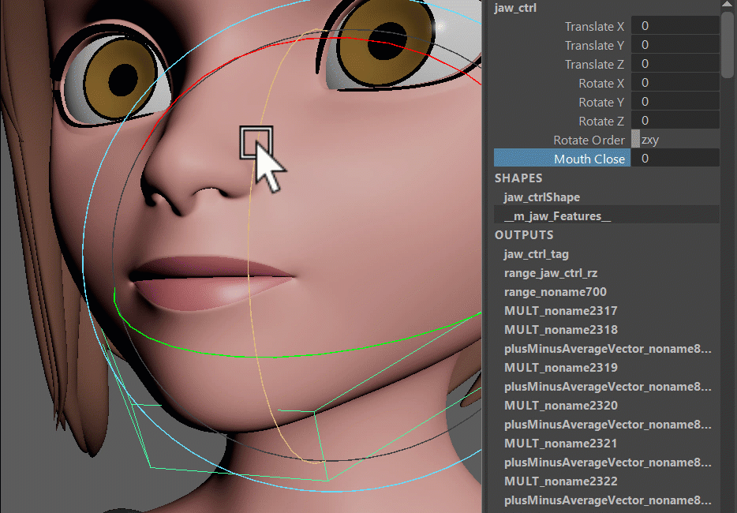
The way you set it up is different in splines and blendShapes.
Careful with mixing!
It's recommended to not mix splines/blendShapes for the mouthClose. Because their timing work different, which means that mixing them might give you issues.
MouthClose with Splines
For Splines we use the Pose Locators.
First you define the jawOpen pose of how far the mouthClose is supported in the dPoseCtrlValues attribute:
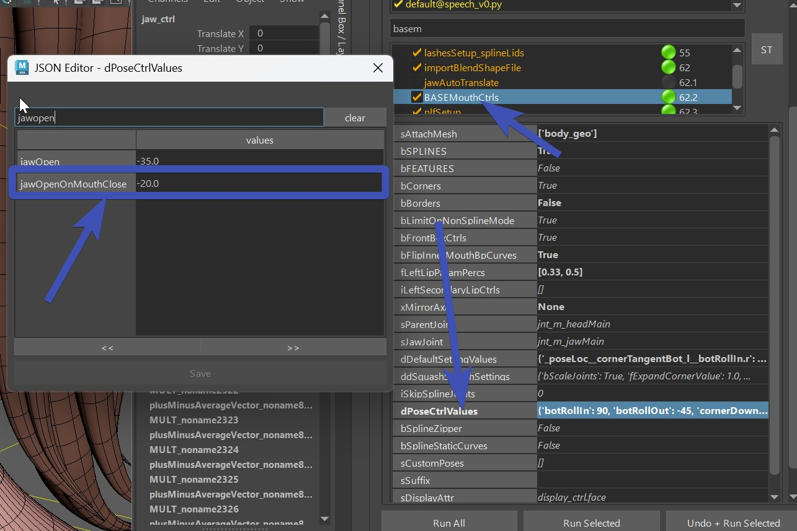
After building open the jaw by setting it to that value (jaw_ctrl.rz to -20.0 in our example), set the mouthClose
attribute to 1.0, and adjust the pose locators to make the mouth close:
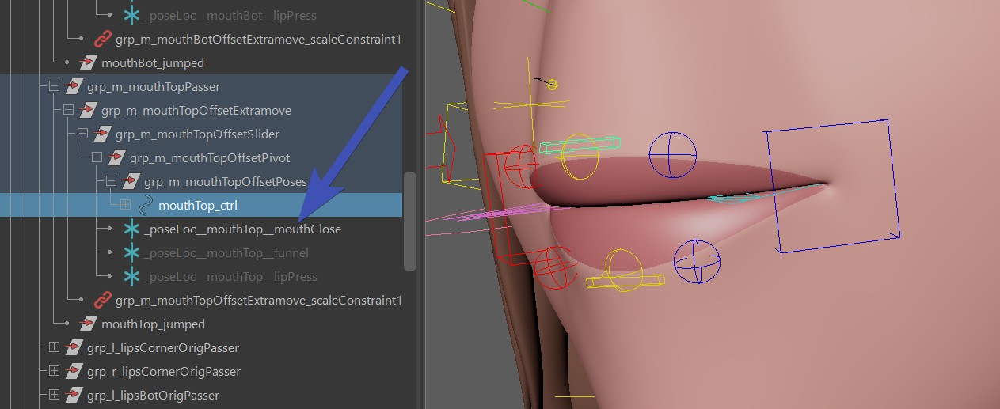
You find those Pose Locators on the box ctrls, but also on the spherical bot/top lips ctrls.
And don't forget to save the pose locator setup with the ** === DEFAULT ATTRS === ** button.
MouthClose with BlendShapes
The blendShape way works a bit different. First it's ignoring the jawOpenOnMouthClose attribute in the dPoseCtrlValues.
And then in the shape editor you have this combo called jawOpen50_mouthClose:
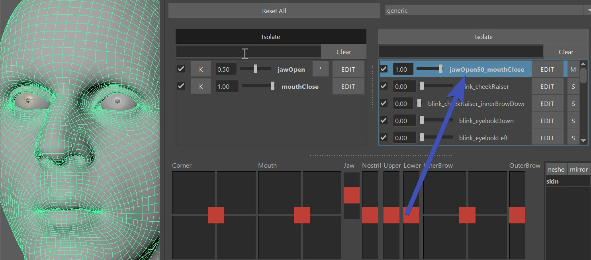
This is bascially the shape that is called by jawOpen (50 %) and mouthClose attribute activated. MouthClose should stay as an empty target.
You can change the percentage of the jaw, see Combos - Add Percentage
NLF Setup
NLF stands for Nasolabial Fold, and it's that line between the nose wing and the mouth corners. Some characters have it more prominent than others.
But the hardest ones to rig are those where you don't see the line in the model, but it's expected on the smile - such as many female characters.
In any case the createNlfSetup() can be very useful for keeping that line stable. But this function only works if you have createBASEMouth() with bSPLINE attribute enabled.

You can adjust how many ctrls you want, in the picture above it's the default - 2 at the top (fTopCtrlPercs) and one at the bottom (fBotCtrlPercs)
Each ctrl comes with extra attributes to adjust the behavior, and they all come a Pose Locator Setup driven by the Corner Poses.
Note
This function is optional. Since it requires more technical abilities to manage so many joints, some projects in the past opted for blendShape NLF lines instead of this.
Cheek Setup
The setup is very similar to NLF lines, except that those lines are a bit further outside. And it's used mainly to enhance the smile a bit more
by bulging out the cheeks

Note
This function is optional. Since it requires more technical abilities to manage so many joints, some projects in the past opted for blendShapes instead of this Cheek Setup.
Post Lip Zipper
If you are not using spline, or you are using spline but offsetted the pivot groups, then you can use the postZipper() function to create a zipper using an extra skinCluster.
It's very easy to setup. Just set the sMesh attribute in the postZipper() to the main mesh
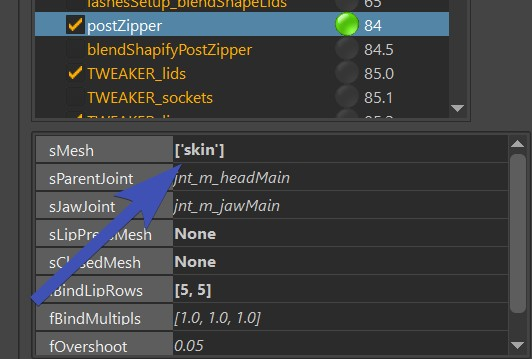
and run the function.
Then having the mesh selected - click the bind selected button to create the skinCluster with the __ZIPPER suffix. 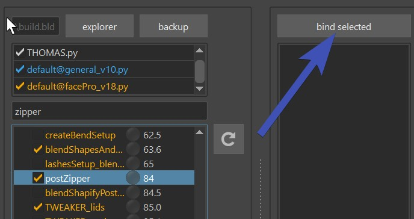
In the end you'll have this skinCluster that has those joints:
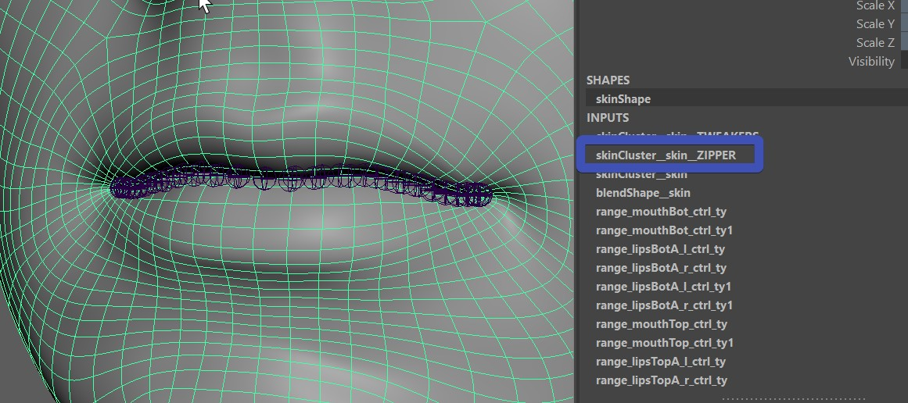
But you don't have to look for the joints, they are already in the skinCluster, and from here you can just use the ClosestExpand tool to set the weights: 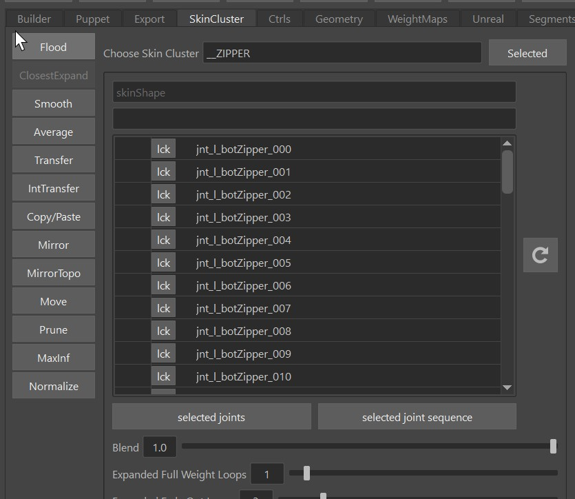
Note
This is taking the blueprints from the BASEMouthSetup() function.
Open Mouth in the Model
The zipper works much better if the mouth is closed in the model. But if it's open, you can still make it work. In the attribute
Very tiny characters
If you are rigging a very small character, you have to be aware of the fBlendShapeMinimumDistance attribute. This is about the joints following the blendShapes. If a blendShape target is making a vertex go less than that threshold value, it will not be affected. So basically you just have to watch if you see any artefacts such as some joints not moving - try to set this value lower.
Stick on LipPress
If you set the attribute bStickOnLipPress to True, and there's a lipPress mesh present - on mouth_ctrl.tz as -1.0 it will also use that setup to lock the mouth close.